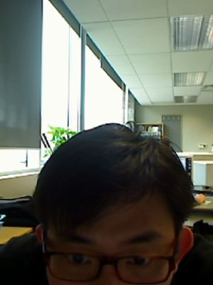

I received my Ph.D. in Computer Science at McGill,
with a focus in Bioinformatics and Systems Biology.
In general, I'm interested in problems from discrete maths and their applications in various disciplines including biology, sociology, networks, etc.
My thesis advisors are Prof. Mathieu Blanchette
and Prof. Adrian Vetta.
Previously, my Master's thesis was on orthogonal graph layouts in 3D, completed in May 2007 under the supervision of
Professor Sue Whitesides.
I now work at Google, Mountain View.
Courses (in reverse chronological order)
COMP764: Topics in Game Theory (audit)
BMDE652: Bioinformatics: Proteomics
BINF621: Bioinformatics & Molecular Biology
COMP691E: Discrete Mathematics of Paul Erdös
COMP618: Functional Genomics
COMP566: Discrete Optimization
COMP598: Readings of Innovative Ideas in System and Networking
COMP506: Advanced Analysis of Algorithms
COMP531: Theory of Computation
COMP680: Mining Biological Sequences
COMP507: Computational Geometry
COMP648: Algorithmic Motion Planning
MATH552: Combinatorial Optimization
COMP601: Special Topics in Computer Science